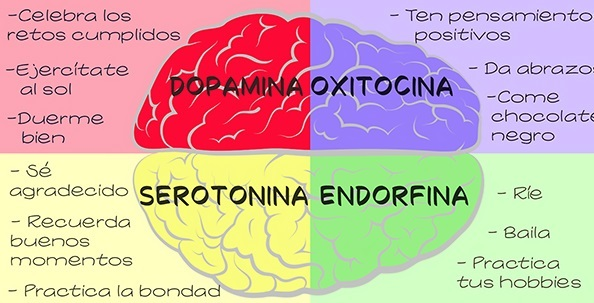

Si te sientes con deseos suicidas o de autoflagelación, pero todavía tienes miedo de pedir ayuda no temas Estamos contigo a través de esta página y podemos darte algunas herramientas de contención que puedes usar por el momento
DOPAMINA:Para tener más dopamina en tu vida: - duerme bien (al menos ocho horas diarias); - haz ejercicio con regularidad (mínimo tres veces por semana), - pasa tiempo al aire libre (es fundamental que tengas contacto con la luz solar), - toma mucha agua, - celebra cada logro que alcances. - la risa -incluso de tus propios errores- es esencial, - bailar, estar con personas que te hacen bien, escuchar música agradable, son otras formas de estimular la dopamina.
OXITOCINA:Para segregar más oxitocina en tu vida: - come chocolate amargo, - haz el amor, - practica la solidaridad y la empatía sincera, - mantén pensamientos positivos, - da abrazos que duren al menos 20 segundos cada uno, - besa, - mima a tu mascota, - crea experiencias de valor positivo que te estimulen y te hagan crecer. - dar o recibir un regalo es otro ejemplo.
ENDORFINA:Para estimular mejor las endorfinas: - Reír; no tomarse las cosas demasiado a pecho; - no tomar nada como personal en las relaciones con otros, - correr; cantar; bailar; - nuevamente, chocolate lo más oscuro posible, - movimiento físico que te haga bien, - ver películas, series y leer libros que te inspiren y te ayuden a crecer como persona; Según un estudio publicado recientemente por investigadores de la Universidad de Oxford, ver películas tristes aumenta los niveles de este químico. - respiración consciente; meditación, mindfulness y cualquier disciplina que te conecte con la felicidad interior.
SEROTONINA: exponerse a la luz del sol, - recibir masajes, - hacer ejercicio físico aeróbico, como pasear y andar en bicicleta. - haz algo por otros; practica la bondad; - recuerda los buenos momentos; - busca un nuevo significado o sentido en las situaciones dolorosas, aprendiendo de ellas; - practica la gratitud varias veces al día; - duerme lo suficiente; - hidrátate en cantidades abundantes (mínimo dos litros de agua por día).